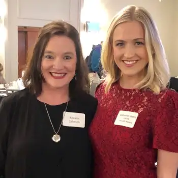

When I heard that Catherine Hadro, host of Eternal World Television Network’s (EWTN) “Pro-life Weekly,” would be keynoting this year’s North Dakota Right to Life banquet in Fargo, I eagerly responded by volunteering to co-host a table for the evening.
I first “met” Catherine Hadro at night walking in our cul-de-sac—by way of my Real Presence Radio phone app’s “podcast” feature. But it was even more lovely to meet her in person at the Holiday Inn in September, just days after the start of the 2019 40 Days for Life campaign.
Hadro’s presentation did not disappoint, giving those who labor tirelessly, but sometimes wearily, in the often-uphill battle for life a nice shot of encouragement.
She first shared the story of a woman, Elisabeth, who grew up in a family of 10 children, and whose parents divorced in her infancy. “Liz” overcame many obstacles to attend college, but her freshman year, found herself pregnant. Despite many hardships, Elisabeth went on to become a success, both in business and in her personal life, going through college while mothering a small child, and later, marrying and giving birth to three more children.
After painting this scenario of the life of Liz, someone Hadro said the abortion industry would have found the perfect candidate for their services, she said, “I’m so grateful to say Liz is my mother, and the baby she had in college is my older sister. My mom is my hero, and I’m blown away with her strength.”
At that point, my tear ducts opened wide. It’s hard to imagine anyone arguing anything other than life while staring at the rippling results of that choice.
Hadro then offered some points to ponder, reminding us we each bear responsibility in this fight. She recalled Matthew 10:16, noting that we must be “shrewd as serpents and simple as doves,” suggesting we follow the abortion industry on social media to be aware of the deceptions they perpetually push on unsuspecting, vulnerable women.
Additionally, she urged thoughtfulness in conveying the pro-life message, to foster productive dialogue. “It’s all about encountering and speaking the truth in a way that the person you’re speaking to can receive it,” she said. Sometimes, she added, that might require introducing the faith perspective, but other times, we need to stay on the intellectual level in conversing with the largely pagan world.
Recently, Hadro noted, some faith leaders have begun nefariously using faith to argue for abortion. To counter this, she recalled Sister Bethany Madonna of the Sisters of Life telling her, “God would never bring a child into existence with the intention of abortion; never.”
Hadro also encouraged, “Do not be afraid of the awkward,” acknowledging that even for her, it’s easy to speak boldly in a room of pro-lifers, but “not as easy when I’m in an Uber or taxi and the driver asks what I do.” But we need to keep trying. “Our world needs your courage right now. We all need to be brave. We will not change the culture if we remain in our silos and echo chambers.”
Finally, Hadro said bravery isn’t possible without personal virtue. “If we, one by one, live out the Culture of Life in our families, relationships and prayer life, the people we come across will notice our peace and our joy, and it will stop them in their tracks,” she said. “They will wonder, ‘What truth do they know that I don’t have?’”
When Mother Teresa spoke at the National Prayer Breakfast in 1994 and told the mixed audience of dignitaries and others that the greatest destroyer of peace today is abortion, Hadro said, people listened. “How could a statement be so powerful coming from this small, hunched over, five-foot woman?” she asked. “Mother Teresa’s words carried great weight and gravity because her life was worth imitating.” Hadro encouraged us to seek the same.
“Each of us here is living in this historic time for a purpose—we each have a role to play,” she said. “Let us continue to be open to life, to sacrifice our time and energy for babies and women in need,” she said, referencing an earlier remark that she considers those who do this regularly, like sidewalk advocates, her heroes.
As we face the daunting winters praying on the sidewalk of our state’s only abortion facility, I hope Hadro’s words can be the warm encouragement we need to endure.
[Note: I write about my experiences on the sidewalk Downtown Fargo on Wednesday, the day abortions happen at our state’s only abortion facility, for New Earth magazine — the official news publication of the Fargo Diocese. I hope you find “Sidewalk Stories” helpful in understanding the truth about abortion and how it plays out tragically each week here in Fargo, N.D. The preceding ran in New Earth’s November 2019 issue.]